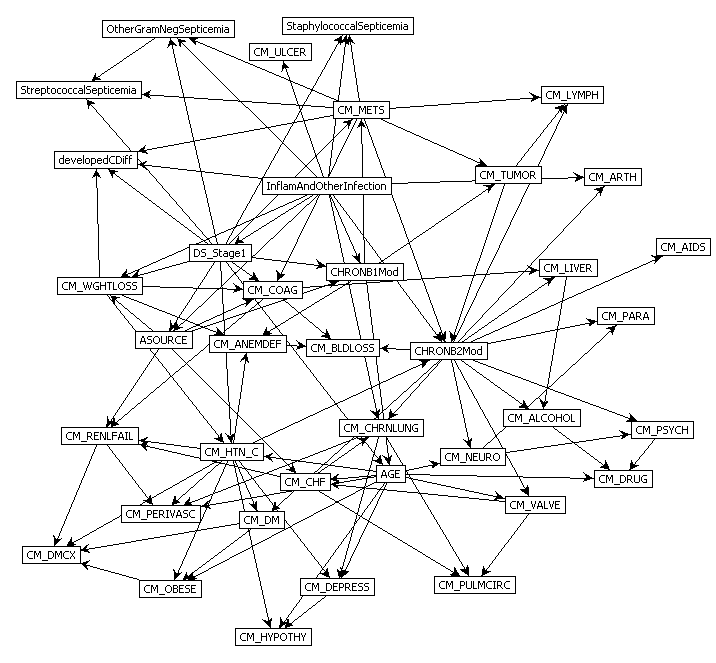
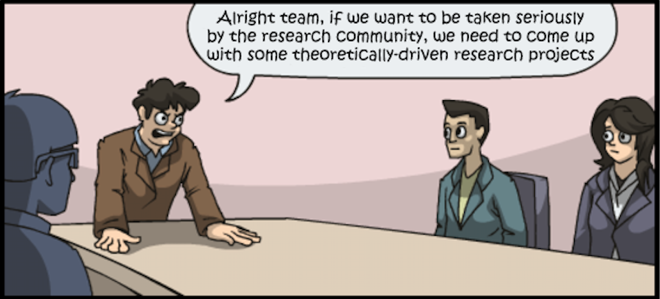
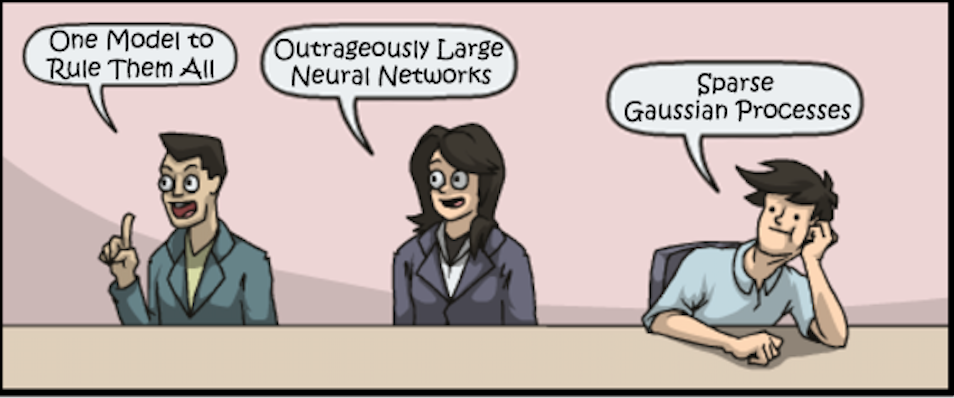
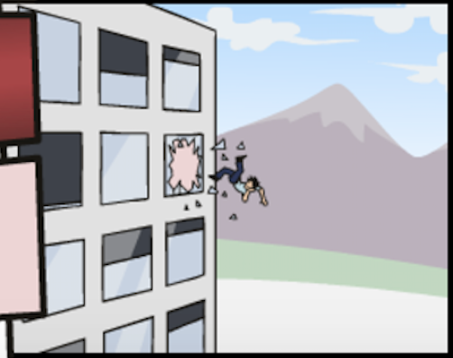
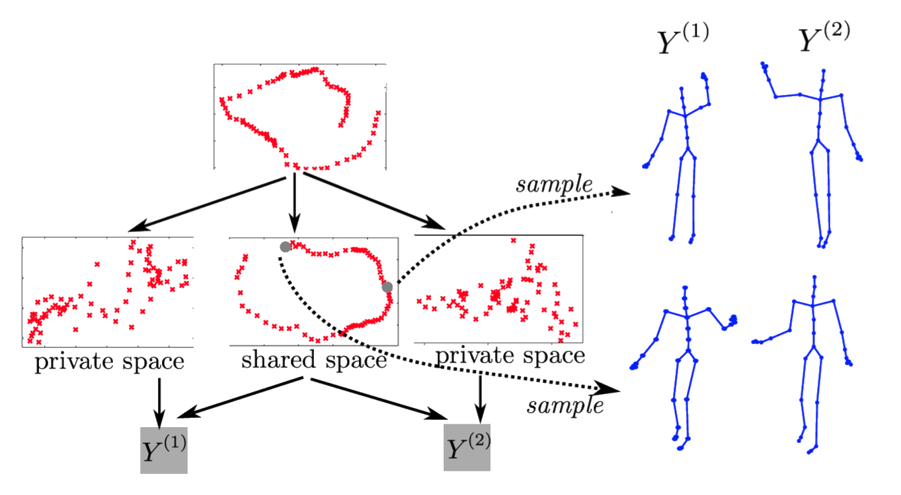

Deep Probabilistic Modelling with with Gaussian Processes
NIPS Tutorial 2017
What is Machine Learning?
\[ \text{data} + \text{model} \xrightarrow{\text{compute}} \text{prediction}\]
- data : observations, could be actively or passively acquired (meta-data).
- model : assumptions, based on previous experience (other data! transfer learning etc), or beliefs about the regularities of the universe. Inductive bias.
- prediction : an action to be taken or a categorization or a quality score.
- Royal Society Report: Machine Learning: Power and Promise of Computers that Learn by Example
What is Machine Learning?
\[\text{data} + \text{model} \xrightarrow{\text{compute}} \text{prediction}\]
- To combine data with a model need:
- a prediction function \(\mappingFunction(\cdot)\) includes our beliefs about the regularities of the universe
- an objective function \(\errorFunction(\cdot)\) defines the cost of misprediction.
Artificial Intelligence
- Machine learning is a mainstay because of importance of prediction.
Uncertainty
- Uncertainty in prediction arises from:
- scarcity of training data and
- mismatch between the set of prediction functions we choose and all possible prediction functions.
- Also uncertainties in objective, leave those for another day.
Neural Networks and Prediction Functions
adaptive non-linear function models inspired by simple neuron models (McCulloch and Pitts, 1943)
have become popular because of their ability to model data.
can be composed to form highly complex functions
start by focussing on one hidden layer
Prediction Function of One Hidden Layer
\[ \mappingFunction(\inputVector) = \left.\mappingVector^{(2)}\right.^\top \activationVector(\mappingMatrix_{1}, \inputVector) \]
\(\mappingFunction(\cdot)\) is a scalar function with vector inputs,
\(\activationVector(\cdot)\) is a vector function with vector inputs.
dimensionality of the vector function is known as the number of hidden units, or the number of neurons.
elements of \(\activationVector(\cdot)\) are the activation function of the neural network
elements of \(\mappingMatrix_{1}\) are the parameters of the activation functions.
Relations with Classical Statistics
In statistics activation functions are known as basis functions.
would think of this as a linear model: not linear predictions, linear in the parameters
\(\mappingVector_{1}\) are static parameters.
Adaptive Basis Functions
In machine learning we optimize \(\mappingMatrix_{1}\) as well as \(\mappingMatrix_{2}\) (which would normally be denoted in statistics by \(\boldsymbol{\beta}\)).
This tutorial: revisit that decision: follow the path of Neal (1994) and MacKay (1992).
Consider the probabilistic approach.
Probabilistic Modelling
- Probabilistically we want, \[ p(\dataScalar_*|\dataVector, \inputMatrix, \inputVector_*), \] \(\dataScalar_*\) is a test output \(\inputVector_*\) is a test input \(\inputMatrix\) is a training input matrix \(\dataVector\) is training outputs
Joint Model of World
\[ p(\dataScalar_*|\dataVector, \inputMatrix, \inputVector_*) = \int p(\dataScalar_*|\inputVector_*, \mappingMatrix) p(\mappingMatrix | \dataVector, \inputMatrix) \text{d} \mappingMatrix \]
\(\mappingMatrix\) contains \(\mappingMatrix_1\) and \(\mappingMatrix_2\)
\(p(\mappingMatrix | \dataVector, \inputMatrix)\) is posterior density
Likelihood
\(p(\dataScalar|\inputVector, \mappingMatrix)\) is the likelihood of data point
Normally assume independence: \[ p(\dataVector|\inputMatrix, \mappingMatrix) \prod_{i=1}^\numData p(\dataScalar_i|\inputVector_i, \mappingMatrix),\]
Likelihood and Prediction Function
\[ p(\dataScalar_i | \mappingFunction(\inputVector_i)) = \frac{1}{\sqrt{2\pi \dataStd^2}} \exp\left(-\frac{\left(\dataScalar_i - \mappingFunction(\inputVector_i)\right)^2}{2\dataStd^2}\right) \]
Unsupervised Learning
Can also consider priors over latents \[ p(\dataVector_*|\dataVector) = \int p(\dataVector_*|\inputMatrix_*, \mappingMatrix) p(\mappingMatrix | \dataVector, \inputMatrix) p(\inputMatrix) p(\inputMatrix_*) \text{d} \mappingMatrix \text{d} \inputMatrix \text{d}\inputMatrix_* \]
This gives unsupervised learning.
Probabilistic Inference
Data: \(\dataVector\)
Model: \(p(\dataVector, \dataVector^*)\)
Prediction: \(p(\dataVector^*| \dataVector)\)
Graphical Models
Represent joint distribution through conditional dependencies.
E.g. Markov chain
\[p(\dataVector) = p(\dataScalar_\numData | \dataScalar_{\numData-1}) p(\dataScalar_{\numData-1}|\dataScalar_{\numData-2}) \dots p(\dataScalar_{2} | \dataScalar_{1})\]
Predict Perioperative Risk of Clostridium Difficile Infection Following Colon Surgery (Steele et al., 2012)

Performing Inference
Easy to write in probabilities
But underlying this is a wealth of computational challenges.
High dimensional integrals typically require approximation.
Linear Models
In statistics, focussed more on linear model implied by \[ \mappingFunction(\inputVector) = \left.\mappingVector^{(2)}\right.^\top \activationVector(\mappingMatrix_1, \inputVector) \]
Hold \(\mappingMatrix_1\) fixed for given analysis.
Gaussian prior for \(\mappingMatrix\), \[ \mappingVector^{(2)} \sim \gaussianSamp{\zerosVector}{\covarianceMatrix}. \] \[ \dataScalar_i = \mappingFunction(\inputVector_i) + \noiseScalar_i, \] where \[ \noiseScalar_i \sim \gaussianSamp{0}{\dataStd^2} \]
Linear Gaussian Models
- Normally integrals are complex but for this Gaussian linear case they are trivial.
Multivariate Gaussian Properties
Recall Univariate Gaussian Properties
- Sum of Gaussian variables is also Gaussian.
\[\dataScalar_i \sim \gaussianSamp{\mu_i}{\dataStd_i^2}\]
\[\sum_{i=1}^{\numData} \dataScalar_i \sim \gaussianSamp{\sum_{i=1}^\numData \mu_i}{\sum_{i=1}^\numData\dataStd_i^2}\]
- Scaling a Gaussian leads to a Gaussian.
\[\dataScalar \sim \gaussianSamp{\mu}{\dataStd^2}\]
\[\mappingScalar\dataScalar\sim \gaussianSamp{\mappingScalar\mu}{\mappingScalar^2 \dataStd^2}\]
Multivariate Consequence
If
\[\inputVector \sim \gaussianSamp{\boldsymbol{\mu}}{\boldsymbol{\Sigma}}\]
And \[\dataVector= \mappingMatrix\inputVector\]
Then \[\dataVector \sim \gaussianSamp{\mappingMatrix\boldsymbol{\mu}}{\mappingMatrix\boldsymbol{\Sigma}\mappingMatrix^\top}\]
Linear Gaussian Models
- linear Gaussian models are easier to deal with
- Even the parameters within the process can be handled, by considering a particular limit.
Multivariate Gaussian Properties
If \[ \dataVector = \mappingMatrix \inputVector + \noiseVector, \]
Assume \[\begin{align} \inputVector & \sim \gaussianSamp{\meanVector}{\covarianceMatrix}\\ \noiseVector & \sim \gaussianSamp{\zerosVector}{\covarianceMatrixTwo} \end{align}\]
Then \[ \dataVector \sim \gaussianSamp{\mappingMatrix\meanVector}{\mappingMatrix\covarianceMatrix\mappingMatrix^\top + \covarianceMatrixTwo}. \] If \(\covarianceMatrixTwo=\dataStd^2\eye\), this is Probabilistic Principal Component Analysis (Tipping and Bishop, 1999), because we integrated out the inputs (or latent variables they would be called in that case).
Non linear on Inputs
- Set each activation function computed at each data point to be
\[ \activationScalar_{i,j} = \activationScalar(\mappingVector^{(1)}_{j}, \inputVector_{i}) \] Define design matrix \[ \activationMatrix = \begin{bmatrix} \activationScalar_{1, 1} & \activationScalar_{1, 2} & \dots & \activationScalar_{1, \numHidden} \\ \activationScalar_{1, 2} & \activationScalar_{1, 2} & \dots & \activationScalar_{1, \numData} \\ \vdots & \vdots & \ddots & \vdots \\ \activationScalar_{\numData, 1} & \activationScalar_{\numData, 2} & \dots & \activationScalar_{\numData, \numHidden} \end{bmatrix}. \]
Matrix Representation of a Neural Network
\[\dataScalar\left(\inputVector\right) = \activationVector\left(\inputVector\right)^\top \mappingVector + \noiseScalar\]
\[\dataVector = \activationMatrix\mappingVector + \noiseVector\]
\[\noiseVector \sim \gaussianSamp{\zerosVector}{\dataStd^2\eye}\]
Prior Density
Define { If we define the prior distribution over the vector \(\mappingVector\) to be Gaussian,} \[ \mappingVector \sim \gaussianSamp{\zerosVector}{\alpha\eye}, \]
Rules of multivariate Gaussians to see that, { then we can use rules of multivariate Gaussians to see that,} \[ \dataVector \sim \gaussianSamp{\zerosVector}{\alpha \activationMatrix \activationMatrix^\top + \dataStd^2 \eye}. \]
\[ \kernelMatrix = \alpha \activationMatrix \activationMatrix^\top + \dataStd^2 \eye. \]
Joint Gaussian Density
- Elements are a function \(\kernel_{i,j} = \kernel\left(\inputVector_i, \inputVector_j\right)\)
\[ \kernelMatrix = \alpha \activationMatrix \activationMatrix^\top + \dataStd^2 \eye. \]
Covariance Function
\[ \kernel_\mappingFunction\left(\inputVector_i, \inputVector_j\right) = \alpha \activationVector\left(\mappingMatrix_1, \inputVector_i\right)^\top \activationVector\left(\mappingMatrix_1, \inputVector_j\right) \]
- formed by inner products of the rows of the design matrix.
Gaussian Process
Instead of making assumptions about our density over each data point, \(\dataScalar_i\) as i.i.d.
make a joint Gaussian assumption over our data.
covariance matrix is now a function of both the parameters of the activation function, \(\mappingMatrix_1\), and the input variables, \(\inputMatrix\).
Arises from integrating out \(\mappingVector^{(2)}\).
Basis Functions
Can be very complex, such as deep kernels, (Cho and Saul, 2009) or could even put a convolutional neural network inside.
Viewing a neural network in this way is also what allows us to beform sensible batch normalizations (Ioffe and Szegedy, 2015).
Non-degenerate Gaussian Processes
This process is degenerate.
Covariance function is of rank at most \(\numHidden\).
As \(\numData \rightarrow \infty\), covariance matrix is not full rank.
Leading to \(\det{\kernelMatrix} = 0\)
Infinite Networks
- In ML Radford Neal (Neal, 1994) asked “what would happen if you took \(\numHidden \rightarrow \infty\)?”

Page 37 of Radford Neal’s 1994 thesis
Roughly Speaking
- Instead of
\[ \begin{align*} \kernel_\mappingFunction\left(\inputVector_i, \inputVector_j\right) & = \alpha \activationVector\left(\mappingMatrix_1, \inputVector_i\right)^\top \activationVector\left(\mappingMatrix_1, \inputVector_j\right)\\ & = \alpha \sum_k \activationScalar\left(\mappingVector^{(1)}_k, \inputVector_i\right) \activationScalar\left(\mappingVector^{(1)}_k, \inputVector_j\right) \end{align*} \]
- Sample infinitely many from a prior density, \(p(\mappingVector^{(1)})\),
\[ \kernel_\mappingFunction\left(\inputVector_i, \inputVector_j\right) = \alpha \int \activationScalar\left(\mappingVector^{(1)}, \inputVector_i\right) \activationScalar\left(\mappingVector^{(1)}, \inputVector_j\right) p(\mappingVector^{(1)}) \text{d}\mappingVector^{(1)} \]
- Also applies for non-Gaussian \(p(\mappingVector^{(1)})\) because of the central limit theorem.
Simple Probabilistic Program
If \[ \begin{align*} \mappingVector^{(1)} & \sim p(\cdot)\\ \phi_i & = \activationScalar\left(\mappingVector^{(1)}, \inputVector_i\right), \end{align*} \] has finite variance.
Then taking number of hidden units to infinity, is also a Gaussian process.
Further Reading
Chapter 2 of Neal’s thesis (Neal, 1994)
Rest of Neal’s thesis. (Neal, 1994)
David MacKay’s PhD thesis (MacKay, 1992)
Distributions over Functions
Sampling a Function
Multi-variate Gaussians
We will consider a Gaussian with a particular structure of covariance matrix.
Generate a single sample from this 25 dimensional Gaussian distribution, \(\mappingFunctionVector=\left[\mappingFunction_{1},\mappingFunction_{2}\dots \mappingFunction_{25}\right]\).
We will plot these points against their index.
Gaussian Distribution Sample
A 25 dimensional correlated random variable (values ploted against index)
Gaussian Distribution Sample
A 25 dimensional correlated random variable (values ploted against index)
Gaussian Distribution Sample
A 25 dimensional correlated random variable (values ploted against index)
Gaussian Distribution Sample
A 25 dimensional correlated random variable (values ploted against index)
Gaussian Distribution Sample
A 25 dimensional correlated random variable (values ploted against index)
Gaussian Distribution Sample
A 25 dimensional correlated random variable (values ploted against index)
Gaussian Distribution Sample
A 25 dimensional correlated random variable (values ploted against index)
Gaussian Distribution Sample
A 25 dimensional correlated random variable (values ploted against index)
Gaussian Distribution Sample
A 25 dimensional correlated random variable (values ploted against index)
Prediction of \(\mappingFunction_{2}\) from \(\mappingFunction_{1}\)
A 25 dimensional correlated random variable (values ploted against index)
Prediction of \(\mappingFunction_{2}\) from \(\mappingFunction_{1}\)
A 25 dimensional correlated random variable (values ploted against index)
Prediction of \(\mappingFunction_{2}\) from \(\mappingFunction_{1}\)
A 25 dimensional correlated random variable (values ploted against index)
Prediction of \(\mappingFunction_{2}\) from \(\mappingFunction_{1}\)
A 25 dimensional correlated random variable (values ploted against index)
Uluru

Prediction with Correlated Gaussians
Prediction of \(\mappingFunction_2\) from \(\mappingFunction_1\) requires conditional density.
Conditional density is also Gaussian. \[ p(\mappingFunction_2|\mappingFunction_1) = \gaussianDist{\mappingFunction_2}{\frac{\kernelScalar_{1, 2}}{\kernelScalar_{1, 1}}\mappingFunction_1}{ \kernelScalar_{2, 2} - \frac{\kernelScalar_{1,2}^2}{\kernelScalar_{1,1}}} \] where covariance of joint density is given by \[ \kernelMatrix = \begin{bmatrix} \kernelScalar_{1, 1} & \kernelScalar_{1, 2}\\ \kernelScalar_{2, 1} & \kernelScalar_{2, 2}\end{bmatrix} \]
Prediction of \(\mappingFunction_{8}\) from \(\mappingFunction_{1}\)
A 25 dimensional correlated random variable (values ploted against index)
Prediction of \(\mappingFunction_{8}\) from \(\mappingFunction_{1}\)
A 25 dimensional correlated random variable (values ploted against index)
Prediction of \(\mappingFunction_{8}\) from \(\mappingFunction_{1}\)
A 25 dimensional correlated random variable (values ploted against index)
Prediction of \(\mappingFunction_{8}\) from \(\mappingFunction_{1}\)
A 25 dimensional correlated random variable (values ploted against index)
Prediction of \(\mappingFunction_{8}\) from \(\mappingFunction_{1}\)
A 25 dimensional correlated random variable (values ploted against index)
Key Object
Covariance function, \(\kernelMatrix\)
Determines properties of samples.
Function of \(\inputMatrix\), \[\kernelScalar_{i,j} = \kernelScalar(\inputVector_i, \inputVector_j)\]
Linear Algebra
Posterior mean
\[\mappingFunction_D(\inputVector_*) = \kernelVector(\inputVector_*, \inputMatrix) \kernelMatrix^{-1} \mathbf{y}\]
Posterior covariance \[\mathbf{C}_* = \kernelMatrix_{*,*} - \kernelMatrix_{*,\mappingFunctionVector} \kernelMatrix^{-1} \kernelMatrix_{\mappingFunctionVector, *}\]
Linear Algebra
Posterior mean
\[\mappingFunction_D(\inputVector_*) = \kernelVector(\inputVector_*, \inputMatrix) \boldsymbol{\alpha}\]
Posterior covariance \[\covarianceMatrix_* = \kernelMatrix_{*,*} - \kernelMatrix_{*,\mappingFunctionVector} \kernelMatrix^{-1} \kernelMatrix_{\mappingFunctionVector, *}\]
Exponentiated Quadratic Covariance
\[ \kernelScalar(\inputVector, \inputVector^\prime) = \alpha \exp\left(-\frac{\ltwoNorm{\inputVector - \inputVector^\prime}^2}{2\ell^2}\right) \]
Olympic Marathon Data
|
 Image from Wikimedia Commons http://bit.ly/16kMKHQ Image from Wikimedia Commons http://bit.ly/16kMKHQ
|
Olympic Marathon Data
Olympic Marathon Data GP

|

|
Basis Function Covariance
\[ \kernel(\inputVector, \inputVector^\prime) = \basisVector(\inputVector)^\top \basisVector(\inputVector^\prime) \]

|
Brownian Covariance
\[ \kernelScalar(t, t^\prime) = \alpha \min(t, t^\prime) \]MLP Covariance
\[ \kernelScalar(\inputVector, \inputVector^\prime) = \alpha \arcsin\left(\frac{w \inputVector^\top \inputVector^\prime + b}{\sqrt{\left(w \inputVector^\top \inputVector + b + 1\right)\left(w \left.\inputVector^\prime\right.^\top \inputVector^\prime + b + 1\right)}}\right) \]

\(\Bigg)\)
Deep Gaussian Processes
Approximations
Approximations
Approximations
Approximations
Full Gaussian Process Fit
Inducing Variable Fit
Inducing Variable Param Optimize
Inducing Variable Full Optimize
Eight Optimized Inducing Variables
Full Gaussian Process Fit
Modern Review
A Unifying Framework for Gaussian Process Pseudo-Point Approximations using Power Expectation Propagation Bui et al. (2017)
Deep Gaussian Processes and Variational Propagation of Uncertainty Damianou (2015)
Deep Neural Network
Deep Neural Network
Mathematically
\[ \begin{align} \hiddenVector_{1} &= \basisFunction\left(\mappingMatrix_1 \inputVector\right)\\ \hiddenVector_{2} &= \basisFunction\left(\mappingMatrix_2\hiddenVector_{1}\right)\\ \hiddenVector_{3} &= \basisFunction\left(\mappingMatrix_3 \hiddenVector_{2}\right)\\ \dataVector &= \mappingVector_4 ^\top\hiddenVector_{3} \end{align} \]
Overfitting
Potential problem: if number of nodes in two adjacent layers is big, corresponding \(\mappingMatrix\) is also very big and there is the potential to overfit.
Proposed solution: “dropout”.
Alternative solution: parameterize \(\mappingMatrix\) with its SVD. \[ \mappingMatrix = \eigenvectorMatrix\eigenvalueMatrix\eigenvectwoMatrix^\top \] or \[ \mappingMatrix = \eigenvectorMatrix\eigenvectwoMatrix^\top \] where if \(\mappingMatrix \in \Re^{k_1\times k_2}\) then \(\eigenvectorMatrix\in \Re^{k_1\times q}\) and \(\eigenvectwoMatrix \in \Re^{k_2\times q}\), i.e. we have a low rank matrix factorization for the weights.
Low Rank Approximation
Deep Neural Network
Deep Neural Network
Mathematically
The network can now be written mathematically as \[ \begin{align} \latentVector_{1} &= \eigenvectwoMatrix^\top_1 \inputVector\\ \hiddenVector_{1} &= \basisFunction\left(\eigenvectorMatrix_1 \latentVector_{1}\right)\\ \latentVector_{2} &= \eigenvectwoMatrix^\top_2 \hiddenVector_{1}\\ \hiddenVector_{2} &= \basisFunction\left(\eigenvectorMatrix_2 \latentVector_{2}\right)\\ \latentVector_{3} &= \eigenvectwoMatrix^\top_3 \hiddenVector_{2}\\ \hiddenVector_{3} &= \basisFunction\left(\eigenvectorMatrix_3 \latentVector_{3}\right)\\ \dataVector &= \mappingVector_4^\top\hiddenVector_{3}. \end{align} \]
A Cascade of Neural Networks
\[ \begin{align} \latentVector_{1} &= \eigenvectwoMatrix^\top_1 \inputVector\\ \latentVector_{2} &= \eigenvectwoMatrix^\top_2 \basisFunction\left(\eigenvectorMatrix_1 \latentVector_{1}\right)\\ \latentVector_{3} &= \eigenvectwoMatrix^\top_3 \basisFunction\left(\eigenvectorMatrix_2 \latentVector_{2}\right)\\ \dataVector &= \mappingVector_4 ^\top \latentVector_{3} \end{align} \]
Cascade of Gaussian Processes
Replace each neural network with a Gaussian process \[ \begin{align} \latentVector_{1} &= \mappingFunctionVector_1\left(\inputVector\right)\\ \latentVector_{2} &= \mappingFunctionVector_2\left(\latentVector_{1}\right)\\ \latentVector_{3} &= \mappingFunctionVector_3\left(\latentVector_{2}\right)\\ \dataVector &= \mappingFunctionVector_4\left(\latentVector_{3}\right) \end{align} \]
Equivalent to prior over parameters, take width of each layer to infinity.
Mathematically
- Composite multivariate function
\[ \mathbf{g}(\inputVector)=\mappingFunctionVector_5(\mappingFunctionVector_4(\mappingFunctionVector_3(\mappingFunctionVector_2(\mappingFunctionVector_1(\inputVector))))). \]
Equivalent to Markov Chain
- Composite multivariate function \[ p(\dataVector|\inputVector)= p(\dataVector|\mappingFunctionVector_5)p(\mappingFunctionVector_5|\mappingFunctionVector_4)p(\mappingFunctionVector_4|\mappingFunctionVector_3)p(\mappingFunctionVector_3|\mappingFunctionVector_2)p(\mappingFunctionVector_2|\mappingFunctionVector_1)p(\mappingFunctionVector_1|\inputVector) \]
Why Deep?
Gaussian processes give priors over functions.
- Elegant properties:
e.g. Derivatives of process are also Gaussian distributed (if they exist).
For particular covariance functions they are ‘universal approximators’, i.e. all functions can have support under the prior.
Gaussian derivatives might ring alarm bells.
E.g. a priori they don’t believe in function ‘jumps’.
Stochastic Process Composition
From a process perspective: process composition.
A (new?) way of constructing more complex processes based on simpler components.
Difficulty for Probabilistic Approaches
Propagate a probability distribution through a non-linear mapping.
Normalisation of distribution becomes intractable.
Difficulty for Probabilistic Approaches
Propagate a probability distribution through a non-linear mapping.
Normalisation of distribution becomes intractable.
Difficulty for Probabilistic Approaches
Propagate a probability distribution through a non-linear mapping.
Normalisation of distribution becomes intractable.
Deep Gaussian Processes
Deep architectures allow abstraction of features (Bengio, 2009; Hinton and Osindero, 2006; Salakhutdinov and Murray, n.d.)
We use variational approach to stack GP models.
Stacked PCA
Stacked PCA
Stacked PCA
Stacked PCA
Stacked PCA
Stacked GP
Stacked GP
Stacked GP
Stacked GP
Stacked GP
Analysis of Deep GPs
Avoiding pathologies in very deep networks Duvenaud et al. (2014) show that the derivative distribution of the process becomes more heavy tailed as number of layers increase.
How Deep Are Deep Gaussian Processes? Dunlop et al. (2017) perform a theoretical analysis possible through conditional Gaussian Markov property.
Olympic Marathon Data
|
Image from Wikimedia Commons http://bit.ly/16kMKHQ
|
Olympic Marathon Data
Olympic Marathon Data GP
|
|
|
Deep GP Fit
Can a Deep Gaussian process help?
Deep GP is one GP feeding into another.
Olympic Marathon Data Deep GP
Olympic Marathon Data Deep GP
Olympic Marathon Data Latent 1
Olympic Marathon Data Latent 2
Olympic Marathon Pinball Plot
Step Function Data
Step Function Data GP
Step Function Data Deep GP
Step Function Data Deep GP
Step Function Data Latent 1
Step Function Data Latent 2
Step Function Data Latent 3
Step Function Data Latent 4
Step Function Pinball Plot
Motorcycle Helmet Data
Motorcycle Helmet Data GP
Motorcycle Helmet Data Deep GP
Motorcycle Helmet Data Deep GP
Motorcycle Helmet Data Latent 1
Motorcycle Helmet Data Latent 2
Motorcycle Helmet Pinball Plot
Robot Wireless Ground Truth
Robot WiFi Data
Robot WiFi Data GP
Robot WiFi Data Deep GP
Robot WiFi Data Deep GP
Robot WiFi Data Latent Space
Robot WiFi Data Latent Space
Motion Capture
‘High five’ data.
Model learns structure between two interacting subjects.
Shared LVM

Deep Health
At this Year’s NIPS
- Gaussian process based nonlinear latent structure discovery in multivariate spike train data Wu et al. (2017)
- Doubly Stochastic Variational Inference for Deep Gaussian Processes Salimbeni and Deisenroth (2017)
- Deep Multi-task Gaussian Processes for Survival Analysis with Competing Risks Alaa and van der Schaar (2017)
- Counterfactual Gaussian Processes for Reliable Decision-making and What-if Reasoning Schulam and Saria (2017)
Some Other Works
- Deep Survival Analysis Ranganath et al. (2016)
- Recurrent Gaussian Processes Mattos et al. (2015)
- Gaussian Process Based Approaches for Survival Analysis Saul (2016)
Uncertainty Quantification
Deep nets are powerful approach to images, speech, language.
Proposal: Deep GPs may also be a great approach, but better to deploy according to natural strengths.
Uncertainty Quantification
Probabilistic numerics, surrogate modelling, emulation, and UQ.
Not a fan of AI as a term.
But we are faced with increasing amounts of algorithmic decision making.
ML and Decision Making
When trading off decisions: compute or acquire data?
There is a critical need for uncertainty.
Uncertainty Quantification
Uncertainty quantification (UQ) is the science of quantitative characterization and reduction of uncertainties in both computational and real world applications. It tries to determine how likely certain outcomes are if some aspects of the system are not exactly known.
- Interaction between physical and virtual worlds of major interest for Amazon.
Example: Formula One Racing
Designing an F1 Car requires CFD, Wind Tunnel, Track Testing etc.
How to combine them?
Mountain Car Simulator

Car Dynamics
\[\inputVector_{t+1} = \mappingFunction(\inputVector_{t},\textbf{u}_{t})\]
where \(\textbf{u}_t\) is the action force, \(\inputVector_t = (p_t, v_t)\) is the vehicle state
Policy
- Assume policy is linear with parameters \(\boldsymbol{\theta}\)
\[\pi(\inputVector,\theta)= \theta_0 + \theta_p p + \theta_vv.\]
Emulate the Mountain Car
- Goal is find \(\theta\) such that
\[\theta^* = arg \max_{\theta} R_T(\theta).\]
- Reward is computed as 100 for target, minus squared sum of actions
Random Linear Controller
Best Controller after 50 Iterations of Bayesian Optimization
Data Efficient Emulation
For standard Bayesian Optimization ignored dynamics of the car.
For more data efficiency, first emulate the dynamics.
Then do Bayesian optimization of the emulator.
Use a Gaussian process to model \[\Delta v_{t+1} = v_{t+1} - v_{t}\] and \[\Delta x_{t+1} = p_{t+1} - p_{t}\]
Two processes, one with mean \(v_{t}\) one with mean \(p_{t}\)
Emulator Training
Used 500 randomly selected points to train emulators.
Can make proces smore efficient through experimental design.
Comparison of Emulation and Simulation
Data Efficiency
Our emulator used only 500 calls to the simulator.
Optimizing the simulator directly required 37,500 calls to the simulator.
Best Controller using Emulator of Dynamics
500 calls to the simulator vs 37,500 calls to the simulator
\[\mappingFunction_i\left(\inputVector\right) = \rho\mappingFunction_{i-1}\left(\inputVector\right) + \delta_i\left(\inputVector \right)\]
Multi-Fidelity Emulation
\[\mappingFunction_i\left(\inputVector\right) = \mappingFunctionTwo_{i}\left(\mappingFunction_{i-1}\left(\inputVector\right)\right) + \delta_i\left(\inputVector \right),\]
Best Controller with Multi-Fidelity Emulator
250 observations of high fidelity simulator and 250 of the low fidelity simulator
Acknowledgments
Stefanos Eleftheriadis, John Bronskill, Hugh Salimbeni, Rich Turner, Zhenwen Dai, Javier Gonzalez, Andreas Damianou, Mark Pullin.
Ongoing Code
Powerful framework but
Software isn’t there yet.
Our focus: Gaussian Processes driven by MXNet
Composition of GPs, Neural Networks, Other Models
Thanks!
- twitter: @lawrennd
- blog: http://inverseprobability.com
References
Alaa, A.M., van der Schaar, M., 2017. Deep multi-task Gaussian processes for survival analysis with competing risks, in: Guyon, I., Luxburg, U.V., Bengio, S., Wallach, H., Fergus, R., Vishwanathan, S., Garnett, R. (Eds.), Advances in Neural Information Processing Systems 30. Curran Associates, Inc., pp. 2326–2334.
Bengio, Y., 2009. Learning Deep Architectures for AI. Found. Trends Mach. Learn. 2, 1–127. https://doi.org/10.1561/2200000006
Bui, T.D., Yan, J., Turner, R.E., 2017. A unifying framework for gaussian process pseudo-point approximations using power expectation propagation. Journal of Machine Learning Research 18, 1–72.
Cho, Y., Saul, L.K., 2009. Kernel methods for deep learning, in: Bengio, Y., Schuurmans, D., Lafferty, J.D., Williams, C.K.I., Culotta, A. (Eds.), Advances in Neural Information Processing Systems 22. Curran Associates, Inc., pp. 342–350.
Damianou, A., 2015. Deep gaussian processes and variational propagation of uncertainty (PhD thesis). University of Sheffield.
Dunlop, M.M., Girolami, M., Stuart, A.M., Teckentrup, A.L., 2017. How Deep Are Deep Gaussian Processes? ArXiv e-prints.
Duvenaud, D., Rippel, O., Adams, R., Ghahramani, Z., 2014. Avoiding pathologies in very deep networks, in:.
Hinton, G.E., Osindero, S., 2006. A fast learning algorithm for deep belief nets. Neural Computation 18, 2006.
Ioffe, S., Szegedy, C., 2015. Batch normalization: Accelerating deep network training by reducing internal covariate shift, in: Bach, F., Blei, D. (Eds.), Proceedings of the 32nd International Conference on Machine Learning, Proceedings of Machine Learning Research. PMLR, Lille, France, pp. 448–456.
MacKay, D.J.C., 1992. Bayesian methods for adaptive models (PhD thesis). California Institute of Technology.
Mattos, C.L.C., Dai, Z., Damianou, A.C., Forth, J., Barreto, G.A., Lawrence, N.D., 2015. Recurrent gaussian processes. CoRR abs/1511.06644.
McCulloch, W.S., Pitts, W., 1943. A logical calculus of the ideas immanent in nervous activity. Bulletin of Mathematical Biophysics 5, 115–133.
Neal, R.M., 1994. Bayesian learning for neural networks (PhD thesis). Dept. of Computer Science, University of Toronto.
Ranganath, R., Perotte, A., Elhadad, N., Blei, D., 2016. Deep survival analysis, in: Doshi-Velez, F., Fackler, J., Kale, D., Wallace, B., Wiens, J. (Eds.), Proceedings of the 1st Machine Learning for Healthcare Conference, Proceedings of Machine Learning Research. PMLR, Children’s Hospital LA, Los Angeles, CA, USA, pp. 101–114.
Salakhutdinov, R., Murray, I., n.d. On the quantitative analysis of deep belief networks, in:. pp. 872–879.
Salimbeni, H., Deisenroth, M., 2017. Doubly stochastic variational inference for deep gaussian processes, in: Guyon, I., Luxburg, U.V., Bengio, S., Wallach, H., Fergus, R., Vishwanathan, S., Garnett, R. (Eds.), Advances in Neural Information Processing Systems 30. Curran Associates, Inc., pp. 4591–4602.
Saul, A.D., 2016. Gaussian process based approaches for survival analysis (PhD thesis). University of Sheffield.
Schulam, P., Saria, S., 2017. Counterfactual gaussian processes for reliable decision-making and what-if reasoning, in: Guyon, I., Luxburg, U.V., Bengio, S., Wallach, H., Fergus, R., Vishwanathan, S., Garnett, R. (Eds.), Advances in Neural Information Processing Systems 30. Curran Associates, Inc., pp. 1696–1706.
Steele, S., Bilchik, A., Eberhardt, J., Kalina, P., Nissan, A., Johnson, E., Avital, I., Stojadinovic, A., 2012. Using machine-learned Bayesian belief networks to predict perioperative risk of clostridium difficile infection following colon surgery. Interact J Med Res 1, e6. https://doi.org/10.2196/ijmr.2131
Tipping, M.E., Bishop, C.M., 1999. Probabilistic principal component analysis. Journal of the Royal Statistical Society, B 6, 611–622. https://doi.org/doi:10.1111/1467-9868.00196
Wu, A., Roy, N.G., Keeley, S., Pillow, J.W., 2017. Gaussian process based nonlinear latent structure discovery in multivariate spike train data, in: Guyon, I., Luxburg, U.V., Bengio, S., Wallach, H., Fergus, R., Vishwanathan, S., Garnett, R. (Eds.), Advances in Neural Information Processing Systems 30. Curran Associates, Inc., pp. 3499–3508.